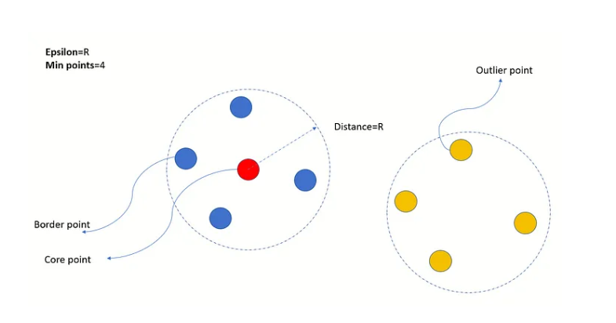
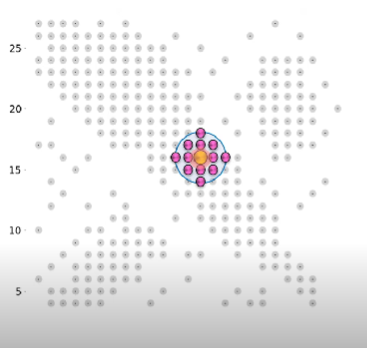
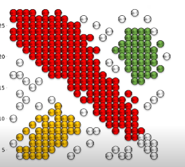
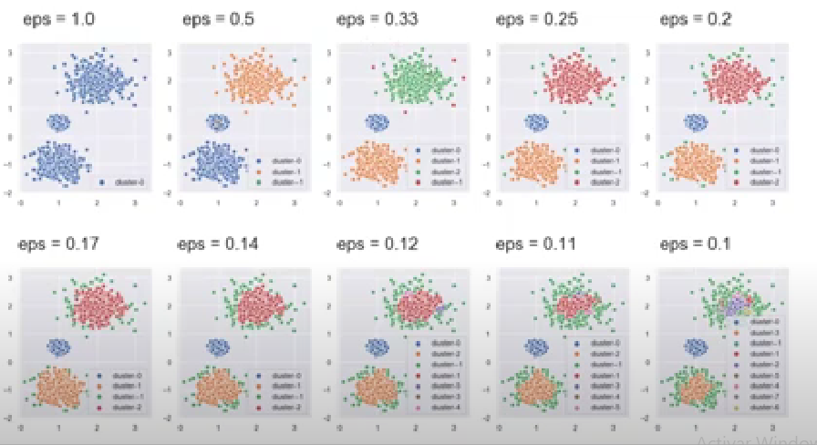

El algoritmo en R realiza lo siguiente para calcular el coeficiente de silhouette:
Para cada observación en el conjunto de datos, se calcula la distancia media al resto de observaciones dentro de su propio clúster (a) y la distancia media al resto de observaciones en el clúster más cercano diferente (b).
El coeficiente de silhouette para cada observación se calcula como (b - a) / max(a, b).
El coeficiente de silhouette promedio para el conjunto de datos se calcula como el promedio de los coeficientes de silhouette individuales.
Con este coeficiente podemos encontrar el número óptimo de clusters:
La suma de los cuadrados dentro del clúster (WSS) es una medida de cuán cohesivos son los clústeres, es decir, cuán cerca están los puntos dentro de un clúster entre sí. El método de codo consiste en calcular la WSS para diferentes valores de k (número de clústeres) y graficar estos valores en función de k. La idea es identificar el “codo” en la curva, que es el punto donde la WSS comienza a disminuir de manera más lenta. Este punto indica el número óptimo de clústeres, ya que agregar más clústeres a partir de este punto no proporciona una mejora significativa en la cohesión dentro de los clústeres.
Las fórmulas para calcular la WSS son las siguientes:
Para cada clúster \(C_i\)
Se calcula la distancia cuadrada de cada punto al centroide del clúster \(\mu_i\)
Se suman estas distancias cuadradas para obtener la WSS del clúster \(WSS_i\)
\[WSS_i = \sum_{x \in C_i} (x - \mu_i )^2\]
No todos los problemas se pueden resolver con kmeans, sino que existen técnicas más apropiadas para detectar de forma más efectiva como se compartan los puntos en un conjunto de datos:
num_samples = [10,19,20]for min_num in num_samples: db = DBSCAN(eps=0.7, min_samples=min_num, metric='euclidean') plt.scatter(XX[:,0], XX[:,1], c=db.fit_predict(XX)) plt.title('Toy Problem with Minimum Points: '+str(min_num)) plt.show()
Observemos como varía el radio:
epsilons = [0.4,0.7]for epsilon in epsilons: db = DBSCAN(eps=epsilon, min_samples=10, metric='euclidean') plt.scatter(XX[:,0], XX[:,1], c=db.fit_predict(XX)) plt.title('Toy Problem with Minimum Points: '+str(epsilon)) plt.show()
Podemos también entrenar el modelo para cuando lleguen nuevos datos:
# Assuming your data has features 'x' and 'y', select those columns# Split the data into training and testing setsX_train, X_test = train_test_split(df_shapes, test_size=0.2, random_state=12345)# Initialize DBSCAN modeldbscan = DBSCAN(eps=0.15, min_samples=5)# Train the modeldbscan.fit(X_train)
DBSCAN(eps=0.15)
In a Jupyter environment, please rerun this cell to show the HTML representation or trust the notebook. On GitHub, the HTML representation is unable to render, please try loading this page with nbviewer.org.
DBSCAN(eps=0.15)
# Predict cluster labels for the test datatest_labels = dbscan.fit_predict(X_test)print(test_labels)
plt.scatter(X_test.iloc[:,0], X_test.iloc[:,1], c = dbscan_method.fit_predict(X_test))plt.title('Toy Problem with Minimum Points: '+str(5))plt.show()
Método DBSCAN
DBSCAN (Density-Based Spatial Clustering of Applications with Noise) es un algoritmo de clustering basado en densidad. Fue propuesto por Martin Ester, Hans-Peter Kriegel, Jörg Sander y Xiaowei Xu en 1996. El algoritmo tiene como objetivo descubrir clusters de forma arbitraria en un espacio de datos basado en la densidad de los puntos de datos.
Componentes y Parámetros Clave
Epsilon (ε): Radio máximo de un vecindario de un punto. Este parámetro define qué tan cerca deben estar los puntos para ser considerados vecinos. MinPts: Número mínimo de puntos que deben estar en un vecindario para que un punto sea considerado un punto central (core point).

Un vecindario de un punto se define como la región circular con ese punto como el centro y un radio de Epsilon. Cada punto en el conjunto de datos se clasifica en una de las siguientes categorías:
Punto central (Core point): Si hay al menos MinPoints en el vecindario. Punto de borde (Border point): Si este punto se encuentra en el vecindario de un punto central y tiene menos de MinPoints en su propio vecindario. Punto atípico (Outlier point): Tiene menos de MinPoints en su propio vecindario y no tiene ningún otro punto central en su vecindario. Todos los puntos centrales llevan a la formación de un cluster. Si dos clusters tienen 2 o más puntos centrales en su vecindario mutuo, esos clusters se fusionan. Después de este proceso iterativo, nos quedamos con clusters y puntos atípicos.
Esta técnica no depende de inicializaciones aleatorias como lo hace K-means, ya que su enfoque se basa en la densidad de los puntos en el espacio de características.


Ejemplo de diferentes distancias:

DBSCAN (Density-Based Spatial Clustering of Applications with Noise) es útil en situaciones del mundo real en las que los datos tienen una distribución espacial irregular y pueden contener ruido o valores atípicos. Aquí hay algunos escenarios comunes en los negocios y el mundo real donde DBSCAN puede ser preferible sobre K-means:
Detección de anomalías: DBSCAN puede identificar puntos de datos atípicos o ruidosos que no se ajustan a ningún grupo particular. Esto es útil en la detección de fraudes en transacciones financieras, identificación de comportamientos inusuales en sistemas de monitoreo de red, o detectar errores en datos de sensores.
Agrupación de densidad variable: A diferencia de K-means, DBSCAN puede identificar agrupaciones de diferentes formas y tamaños, sin necesidad de especificar el número de clústeres de antemano. Esto es beneficioso en aplicaciones donde los clústeres pueden tener densidades variables o formas irregulares, como la segmentación de clientes en marketing o la agrupación de patrones en datos de imágenes.
Manejo de datos ruidosos: DBSCAN es robusto frente a datos ruidosos y no sensibles a la inicialización de los centroides. Esto lo hace adecuado para conjuntos de datos con ruido o valores atípicos, donde K-means podría verse afectado negativamente por la presencia de estos valores.
Eficiencia computacional: DBSCAN tiene una complejidad de tiempo de ejecución mejor que K-means para conjuntos de datos grandes, ya que no requiere calcular la distancia entre todos los pares de puntos. Esto lo hace más adecuado para aplicaciones de big data o en entornos donde la eficiencia computacional es crucial.
K - mediodes
El método de K-modes es una extensión del algoritmo K-means, diseñado específicamente para manejar datos categóricos. A diferencia de K-means, que se basa en la distancia euclidiana y requiere datos numéricos, K-modes utiliza una medida de disimilitud para trabajar con datos categóricos.
Ventajas de K-modes Manejo de Datos Categóricos:
K-modes está diseñado específicamente para datos categóricos, lo que lo hace más adecuado que K-means para este tipo de datos. Simplicidad y Eficiencia:
Similar a K-means, el algoritmo K-modes es simple y eficiente, escalando bien con conjuntos de datos grandes. Interpretabilidad:
Los modos (centroides) resultantes son fácilmente interpretables, ya que consisten en valores categóricos representativos de los clústeres.
Este conjunto de datos captura diversas características demográficas, patológicas y relacionadas con el tratamiento de los pacientes con cáncer de mama, que pueden ser utilizadas para análisis y potencialmente para predecir resultados de recurrencia.
class (clase) Descripción: Indica si el paciente experimentó una recurrencia del cáncer de mama o no. Valores: “no-recurrence-events” (sin eventos de recurrencia): El paciente no experimentó recurrencia. “recurrence-events” (eventos de recurrencia): El paciente experimentó recurrencia.
age (edad) Descripción: El rango de edad del paciente. Valores: “30-39”: La edad del paciente está entre 30 y 39 años. “40-49”: La edad del paciente está entre 40 y 49 años. “50-59”: La edad del paciente está entre 50 y 59 años. “60-69”: La edad del paciente está entre 60 y 69 años. “70-79”: La edad del paciente está entre 70 y 79 años.
menopause (menopausia): Descripción: Estado menopáusico del paciente. Valores: “premeno” (premenopáusica): El paciente es premenopáusico. “ge40” (mayor o igual a 40): El paciente tiene 40 años o más y es menopáusico. “lt40” (menor de 40): El paciente tiene menos de 40 años y es menopáusico.
tumor_size (tamaño del tumor): Descripción: El tamaño del tumor en milímetros. Valores: Rangos como “0-4”, “5-9”, “10-14”, “15-19”, “20-24”, “25-29”, “30-34”, “35-39”, “40-44”, “45-49”, “50-54”, “55-59”.
inv_nodes (nodos invadidos): Descripción: El número de ganglios linfáticos axilares positivos detectados (indicativo de propagación). Valores: Rangos como “0-2”, “3-5”, “6-8”, “9-11”, “12-14”, “15-17”, “18-20”, “21-23”, “24-26”, “27-29”, “30-32”, “33-35”, “36-39”.
node_caps (cápsula del nodo): Descripción: Presencia de ganglios linfáticos cancerosos más allá de la cápsula. Valores: “no”: No hay ganglios cancerosos más allá de la cápsula. “yes” (sí): Hay ganglios cancerosos más allá de la cápsula.
deg_malig (grado de malignidad): Descripción: Grado de malignidad del tumor, que representa cuán agresivas son las células cancerosas. Valores: 1: Menos agresivo. 2: Moderadamente agresivo. 3: Más agresivo.
breast (mama): Descripción: La mama en la que se detectó el cáncer. Valores: “left” (izquierda): El cáncer se detectó en la mama izquierda. “right” (derecha): El cáncer se detectó en la mama derecha.
breast_quad (cuadrante de la mama): Descripción: El cuadrante de la mama donde se ubicó el tumor. Valores: “left_up” (superior izquierda): Cuadrante superior izquierdo. “left_low” (inferior izquierda): Cuadrante inferior izquierdo. “right_up” (superior derecha): Cuadrante superior derecho. “right_low” (inferior derecha): Cuadrante inferior derecho. “central” (central): Cuadrante central.
irradiat (irradiación): Descripción: Indica si el paciente recibió radioterapia. Valores: “no”: El paciente no recibió radioterapia. “yes” (sí): El paciente recibió radioterapia.
df_cancer2 <- df_cancer[,2:10]head(df_cancer2)
# A tibble: 6 × 9
age mefalsepause tumor_size `inv-falsedes` `falsede-caps` deg_malig breast
<chr> <chr> <chr> <chr> <chr> <int> <chr>
1 30-39 premeno 30-34 0-2 no 3 left
2 40-49 premeno 20-24 0-2 no 2 right
3 40-49 premeno 20-24 0-2 no 2 left
4 60-69 ge40 15-19 0-2 no 2 right
5 40-49 premeno 0-4 0-2 no 2 right
6 60-69 ge40 15-19 0-2 no 2 left
# ℹ 2 more variables: breast_quad <chr>, irradiat <chr>